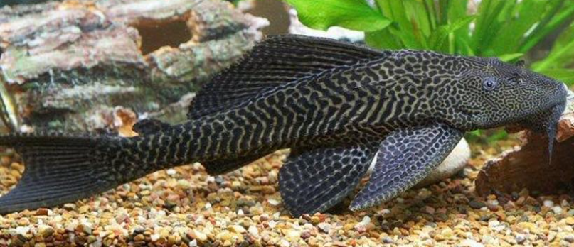
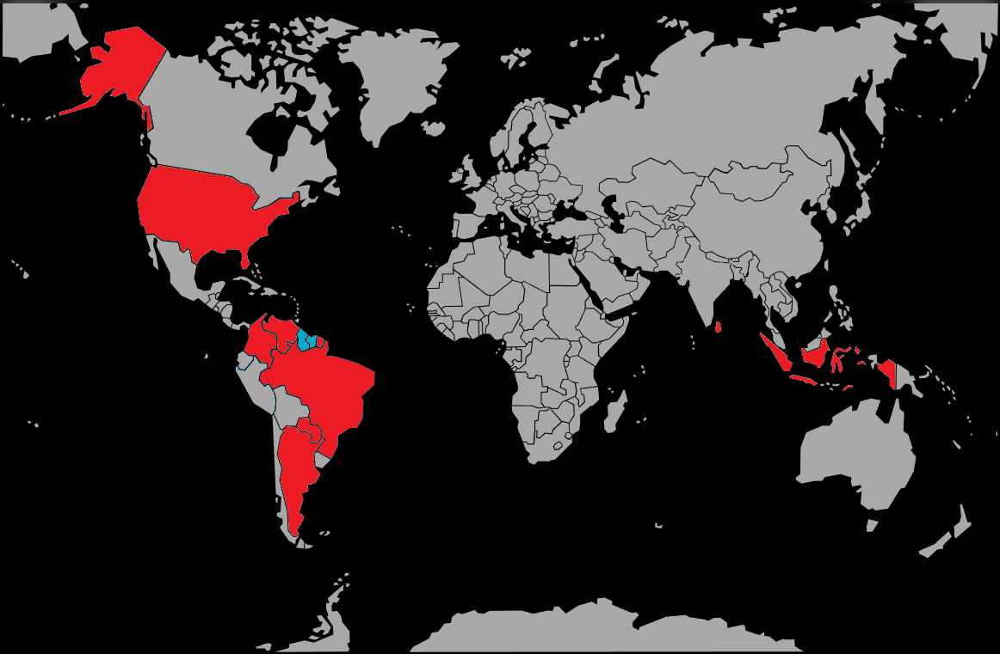

Systématique
- Ordre : Siluriformes
- Famille : Loricariidae
- Genre : Hypostomus
- Espèce : H. plecostomus

Hypostomus plecostomus, le Pléco commun, est l'un des poissons les plus connus et pourtant les plus mal identifiés. Dans le commerce, le nom "Pléco" est souvent utilisé abusivement pour vendre d'autres genres (comme Pterygoplichthys pardalis), mais tous partagent les mêmes caractéristiques : ce sont des géants cuirassés.
Ce poisson possède un corps recouvert de plaques osseuses et une bouche en forme de ventouse située sous la tête. S'il est mignon lorsqu'il mesure 5 cm en animalerie, il devient un monstre atteignant 30 à 50 cm à l'âge adulte (parfois plus en milieu naturel). Sa croissance est rapide.
C'est un poisson extrêmement résistant, capable de survivre dans des conditions difficiles, ce qui explique malheureusement sa présence fréquente dans des aquariums inadaptés.
Le Pléco est essentiellement nocturne. Il passe ses journées caché sous une racine ou collé à une surface sombre, et s'active la nuit pour se nourrir.
En vieillissant, il devient territorial envers les autres poissons de fond. Sa taille et ses mouvements brusques peuvent déranger les espèces calmes et déraciner les plantes fragiles. Bien qu'il soit vendu comme "mangeur d'algues", un adulte préfère largement les granulés et peut devenir un opportuniste (mangeant parfois le mucus des poissons plats comme les Discus).
Mode : ovipare.
La reproduction est quasiment impossible en aquarium domestique standard. Dans la nature, il creuse de profonds terriers (plus d'un mètre) dans les berges argileuses des rivières pour y pondre.
La plupart des spécimens du commerce proviennent d'élevages en grands bassins extérieurs en Asie ou de captures.
Dimorphisme sexuel : Difficile à observer. Les mâles matures peuvent avoir des nageoires pectorales plus épaisses et parfois une coloration rougeâtre, mais ce n'est pas un critère fiable. Le meilleur indicateur est la papille génitale, visible seulement en retournant le poisson.
Espérance de vie : Très longue, il dépasse facilement les 15 à 20 ans.
L'espèce type H. plecostomus est originaire du nord de l'Amérique du Sud (Suriname, Guyana, Guyane française). Cependant, les espèces similaires vendues sous ce nom peuplent tout le bassin amazonien. Il vit dans les cours d'eau à courant rapide aussi bien que dans les eaux stagnantes et troubles.
Répartition

Origine naturelle :
- Amérique du Sud (Nord-Est).
- Suriname.
- Guyana.
- Introduit et invasif dans de nombreuses régions tropicales du monde.
Paramètres de maintenance
Température : 20 à 28 °C (très tolérant).
pH : 6,0 à 8,0.
GH : 5 à 25 °dGH.
Volume conseillé : Minimum 400 à 600 L. Ce n'est absolument pas un poisson pour petit aquarium. Il produit une quantité phénoménale de déchets, nécessitant une filtration surpuissante.
Régime alimentaire
Régime : omnivore à tendance végétarienne/détritivore.
Juvénile, il consomme beaucoup d'algues. Adulte, il a besoin d'apports conséquents : courgettes, concombres, épinards pochés, et pastilles de fond pour grands poissons de fond.
La présence de racines de bois dans l'aquarium est recommandée pour faciliter sa digestion (fibres de cellulose).